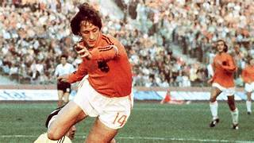
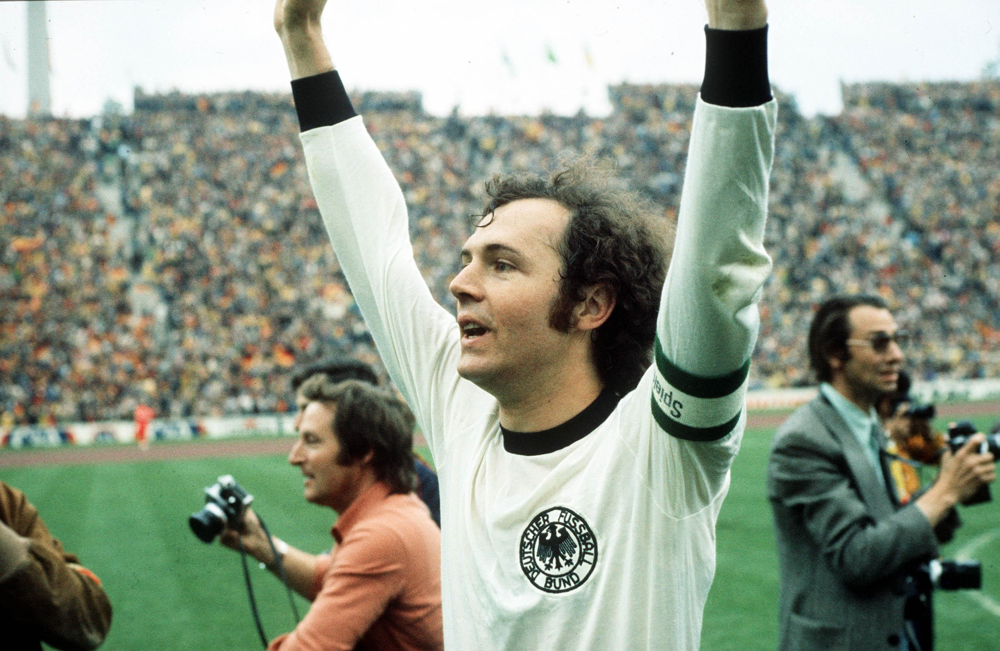

5. Johan Cruyff - Países Bajos

El neerlandés jugó un fútbol muy avanzado para su época liderando a dos grandes equipos que marcaron su época como lo fue La Naranja Mecanica, el Ajax y el Barcelona. Sin dudas, fue un personaje muy querido por todos en el mundo futbolístico.
4. Franz Beckenbauer - Alemania

El mejor defensor en esta lista. Fue el líder de la Selección Alemana campeona de 1974 y una parte fundamental del Bayern Múnich que supo estar en los primeros planos europeos durante muchísimos años.